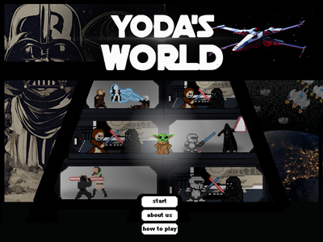

CMSC 12 Project: Maze Runner using Python

CMSC 150 Project: Generic Solvers using R

CMSC 22 Project: Yoda's World using Java
I am a graduating Computer Science student from the University of the Philippines Los Baños.
I have experience coding in different programming languages like Python, Java, C, R, HTML, and CSS.
Currently, I am trying to improve my frontend skills by practicing and exploring on my free time.
CMSC 12 Project: Maze Runner using Python
CMSC 150 Project: Generic Solvers using R
CMSC 22 Project: Yoda's World using Java


Copyright. All rights reserved.